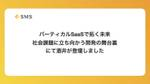

エス・エム・エス エンジニア テックブログ
https://tech.bm-sms.co.jp/
エス・エム・エスの開発組織、技術的取り組み、採用情報などを発信します
フィード
Google Chromeで素早くAWSマネージメントコンソールの特定のサービスページを開く方法 1
1
エス・エム・エス エンジニア テックブログ
こんにちは！ 5月に株式会社エス・エム・エスへ入社しました、SREの西田和史です。 今日はAmazon Web Services（以下AWS。各サービス名も一般的な略称で表記します）周りのTipsを共有します。 解決したい課題 AWSマネージメントコンソールで特定のサービスのページを開こうとすると、たくさんのサービスがあることもあり結構手間がかかります。 よく使うサービスはホーム画面にリストで表示されていますが、リストの順番は毎回変わりますし、 検索機能も使いにくく、「ECR」など妥当なキーワードでも対応するサービスが出てこないこともあります。 解決策 Google Chromeのサイト内検索…
13時間前

バーティカル SaaSで拓く未来：社会課題に立ち向かう開発の舞台裏 にて酒井が登壇しました
エス・エム・エス エンジニア テックブログ
こんにちは、エス・エム・エスで人事をしているふかしろ(@fkc_hr)です。 今回、X Mileさんにお声がけいただき、アンドパッドさんと3社合同で「バーティカル SaaSで拓く未来：社会課題に立ち向かう開発の舞台裏)」というイベントを開催いたしました。 エス・エム・エスからはカイポケ開発部の酒井(@_atsushisakai)が登壇し「大規模 SaaS の技術的意思決定を支える三要素」についてお話しました。 当日はアンドパッドさんのコミュニティスペースでのオフライン実施と、YouTubeのオンライン配信のハイブリッド型で実施し、各社の執行役員や開発責任者 のLTとオフライン懇親会を実施しまし…
7日前

子育てをしながらエス・エム・エスで働くことを決めた理由
エス・エム・エス エンジニア テックブログ
はじめまして 2024年にエス・エム・エスに入社したまゆゆです。プロダクト推進本部の人事として@fkc_hrと一緒に日々 プロダクト推進本部の採用活動をしています。 エス・エム・エスに入社してこのブログが公開される頃には4ヶ月が経ったくらいのタイミングかと思います。 私は気がついたらなんだかんだ干支一周分くらいの年数をこのIT・Web業界で過ごしていて、いつのまにか半分近く採用領域に関わっていました。 ただ、その間にライフステージに変化があり、産休・育休を経て、途中で採用に関わるのはほんの少しだったりしたこともあったので、経験年数としては正味5年行かないくらいになるかなと思います。 今回、子育…
15日前
Ruby未経験者がRubyKaigiに参加してきたお話
エス・エム・エス エンジニア テックブログ
はじめまして。ひろき（@pirotyyy23）です！ 先日、株式会社エス・エム・エスのご支援を受け、RubyKaigi 2024に参加してきました。 この記事では、Ruby未経験かつRubyKaigi初参加の目線で、RubyKaigiに関する記録を残したいと思います！ RubyKaigi2024に参加した経緯 私は昨年の今頃から学生エンジニアとしてソフトウェア開発に取り組んでいます。 ある日、友人から「RubyKaigiは最高だから絶対参加した方が良い！」とおすすめされたのがきっかけでした。 そこでエス・エム・エスの学生支援企画の募集ページを発見し、「こんなチャンス二度とない！」と思い応募しま…
22日前
フルリモート下でのキャッチアップについて
エス・エム・エス エンジニア テックブログ
こんにちは。人材紹介開発グループに所属しているT・Dです。私は2023年12月にWEBエンジニアとしてエス・エム・エスに入社し、現在は福岡県から完全リモートワークで業務を行っています。 フルリモートワークが普及する中、新しいチーム環境へのスムーズな適応は、多くの企業にとって共通の課題となっています。本記事ではこの課題に対して、私のチームではどのように取り組んでいるか、そして私自身がどのようにキャッチアップを行ってきたかについてご紹介します。 オリエンテーション 新たな職場での初日をいかにスムーズに迎えるかが大切です。PCや必要な機材は、入社日までに自宅に配送され、初日から準備万端で業務を開始で…
1ヶ月前
プロダクションレディな品質を目指すために取り組んでいること
エス・エム・エス エンジニア テックブログ
はじめに 初めまして。人材紹介開発グループにて、介護職向け人材紹介サービス カイゴジョブエージェントの開発を担当している和田です。 本記事では、「プロダクションレディな品質」を目指すための取り組みについて紹介させていただきます。 同様の取り組みをしている方や、興味のある方の目に留まり少しでもお役に立てたら幸いです。 取り組みの背景 ある障害が発生した際に、原因の一つとして「リリース可能な品質水準について共通認識を持てていない」事が挙げられたのが発端でした。 「本番にリリースしていい状態 = プロダクションレディな状態」に対して、まず前段として開発のフローが一定の水準で確立されていることが最低限…
1ヶ月前
Datadogでもサポート（ベータ版）されているOpenTelemetryのSpan Linkを試した
エス・エム・エス エンジニア テックブログ
はじめに エス・エム・エスでエンジニアをしている @koma_koma_d です。みなさん、オブザーバビリティ、やってますか？今回の記事では、OpenTelemetryのSpan Linkについて紹介します。 そもそも、トレース、スパンとは？ オブザーバビリティにおける主要なシグナルとして、「ログ」「トレース」「メトリクス」の3つが挙げられます。その一つであるトレースは、システムの処理の流れをエンドツーエンドで追跡するための仕組みです。1つのリクエストが処理される流れを、部分に分割して可視化することができます。 トレースは、以下のような「スパン」のツリー構造として表現されます。スパンは、処理中…
1ヶ月前
「求人の裏には未来の患者がいる」。医療キャリア事業責任者に聞く事業の重要性とプロダクト開発の展望
エス・エム・エス エンジニア テックブログ
こんにちは、プロダクト開発部人事のふかしろ(@fkc_hr)です。先日、医療キャリア事業に携わる開発組織についてのページを公開し、ブログでも紹介しました。こちらの記事および採用情報サイトのページでは、開発組織からの視点で医療キャリア事業について説明しています。 今回は、医療キャリア事業の事業責任者を務める山本健さんに事業の詳細や、開発組織との関わりについて伺いました。ぜひ最後までお読みください！ tech.bm-sms.co.jp careers.bm-sms.co.jp はじめに エス・エム・エスで医療キャリア領域の事業責任者を務めている山本です。製造業のベンチャー企業や結婚式場の運営会社で…
2ヶ月前
PHPカンファレンス小田原にスピーカーとして参加してきました
エス・エム・エス エンジニア テックブログ
キャリア事業でSREをしている@st_1tです。 先日、PHPカンファレンス小田原にスピーカーとして参加させていただきました。 実はほぼ初めてのカンファレンスでのスピーカー体験 今までずっとパブリックな場でスピーカーとして登壇することは実は避けてきていました。 話すネタがなかったり、内容に自信が持てなかったり、色々な理由があるのですが、一番は言葉や表現を間違えることへのプレッシャーがあります。 自分にとってそういうプレッシャーがある中でプロポーザルに応募したのは、運営スタッフに顔見知りのメンバーがいたことにあります。 初登壇を終えた今となっては他のイベントでも登壇に挑戦してみよう・・・！！と感…
2ヶ月前
エス・エム・エスは RubyKaigi 2024 をすごく楽しみにしています！
エス・エム・エス エンジニア テックブログ
こんにちは、プロダクト推進本部人事のふかしろ(@fkc_hr)です。 わたしは2022年にエス・エム・エスに入社して、ついに3回目の現地参加となります。 本日は RubyKaigi 2024 の協賛についてのご案内です。 rubykaigi.org カンファレンスの右も左もわからない状態で最初に参加したのが三重で行われた RubyKaigi で、エンジニアの後ろをついて行きつつ、シャトルバスの案内をしていました (笑)。エンジニアの方や人事・広報の方とお話をしている中で、共通の悩みを相談できたことが新鮮で、2日目からもっと積極的に伺えるようになりました。複数年参加してみて、顔見知りの状態で最近…
2ヶ月前
AWS初学者向けワークショップ AWS JumpStart 2024 に参加しました！
エス・エム・エス エンジニア テックブログ
初めまして。株式会社エス・エム・エスBPR推進部の新沼元樹（にいぬま もとき）です。 3月14日、15日の2日間に渡り開催されたアマゾンウェブサービスジャパン合同会社主催のワークショップAWS JumpStart 2024に参加してきました。 以下では、AWS JumpStart 2024の内容とその中で得た学びについて皆さんに共有していきたいと思います。 aws.amazon.com AWS JumpStart 2024に参加した理由 私はAWSを使い始めてまだ3か月程の初心者でした。日々の業務で分からないことがある時には近くのメンバーに聞いたり、AWS公式のドキュメントを参考にしてきました…
2ヶ月前
カイポケユーザーのケアマネジャーに1日密着してみた！
エス・エム・エス エンジニア テックブログ
こんにちは、カイポケのリニューアルプロジェクトを担当しているプロダクトマネージャーの田村恵(@megumu_tamura)です。今回は、介護事業者向け経営支援サービス「カイポケ」のユーザーである、ケアマネジャーの松本さんに1日密着させていただいた活動について紹介します。この活動は、「ユーザー訪問のすゝめ: BtoB SaaS開発組織におけるユーザー理解のための取り組み」の記事でも触れたコンセプトに沿ったものです。 tech.bm-sms.co.jp ユーザー訪問の目的 私たちの目的は、カイポケをどのように活用しているか、及びカイポケの使用に限らずケアマネジャーが直面している課題を把握することで…
3ヶ月前
Apollo Client/GraphQLで意図しないキャッシュが効いてしまう問題の解決策
エス・エム・エス エンジニア テックブログ
はじめに カイポケリニューアルのフロントエンドエンジニアの原野です。2023年10月より入社し、前職ではiOS/Webのエンジニアをしていました。 カイポケリニューアルプロジェクトでは、データ取得にGraphQLを採用しており、クライアントのライブラリとしてApollo Clientを使用しています。 GraphQLは、データの要求と取得をより効率的に行うことができる技術です。しかし、その機能を直接fetchメソッドで扱う場合、複雑な状態管理やキャッシュ戦略を自前で実装する必要があります。 ここでApollo Clientの出番です。 Apollo Clientは、これらの課題を解決するための…
3ヶ月前
PHPerKaigi 2024に参加してきました＆GOLDスポンサーとして協賛しました！
エス・エム・エス エンジニア テックブログ
3月7日から3月9日に開催されたPHPerKaigi 2024に、エス・エム・エスのメンバーが参加してきました&弊社もGOLDスポンサーとして協賛いたしました！ この記事では、メンバーの印象に残ったセッションの紹介・感想をお届けします！ phperkaigi.jp 1. NE株式会社 やまもとひろやさん 「パフォーマンスを改善するには仕様変更が1番はやい」 fortee.jp パフォーマンス改善の選択肢として仕様変更を含める発想がなかったので学びの多いトークでした。 "パフォーマンス改善"が"元の挙動を必ず保つ必要がある"かどうか、またユーザーが本質的に求めているものは何かを考えることは、フォ…
3ヶ月前
QA組織に不具合分析の仕組みを導入したお話
エス・エム・エス エンジニア テックブログ
はじめに 介護事業者向け経営支援サービス「カイポケ」でQAを担当している中村です。今回の記事は少し前の取り組みなのですが、私が導入を推進した『不具合分析』について紹介したいと思います。真新しい取り組みではないのですが、本記事を通じてエス・エム・エスのQA組織のことを少しでも知ってもらえれば幸いです。 不具合分析の導入 導入の経緯 私が入社した当初、不具合分析の導入をQA組織として目指していたのですが、日々の業務に忙殺されてそこまで手が掛けられていない状況でした。前職時代に不具合分析の経験があったのと導入へのモチベーションが高かったので、志を同じくする有志のメンバーを募って導入活動を推進していく…
3ヶ月前
新しいカイポケのデータプラットフォームをどのように考えて構築しているのか：目的・制約条件・システム構成
エス・エム・エス エンジニア テックブログ
カイポケ・データプラットフォームチームの河本と申します。以前にSMS Tech blog では 「なぜ介護事業者向け経営支援 SaaS「カイポケ」でデータプラットフォームをこれから作るのか」 では介護を取り巻く社会環境の観点からデータプラットフォームに求められる要件について、「「マーケットに向き合う」エンジニアと経営陣がいたからこそ爆誕したデータプラットフォームチーム」ではデータプラットフォームチームのこれまでの進捗について、社内でのミッション設定やチーム組成について語ってきました。 tech.bm-sms.co.jp tech.bm-sms.co.jp この記事では、これらの記事に続いて、デ…
4ヶ月前
株式会社エス・エム・エスはRubyKaigi 2024に参加したい学生さんを支援します！
エス・エム・エス エンジニア テックブログ
（2024年3月21日追記：以下の募集は締め切りました。ご応募ありがとうございました！） はじめに エス・エム・エスでエンジニアリングマネージャーをしている @emfurupon777 です。 5月15日〜17日にRubyKaigi 2024が開催されます(会場： 沖縄県那覇市 那覇文化芸術劇場なはーと)。 弊社はPlatinumスポンサーとして協賛し、ブース出展もさせていただきます。 rubykaigi.org 当日は弊社技術責任者の @sunaot や登壇を予定している @coe401_ をはじめとする弊社社員たちが参加予定です。 今回、弊社としてははじめての試みとして、学生さんのRuby…
4ヶ月前
会社として初めてのアドベントカレンダーのふりかえり
エス・エム・エス エンジニア テックブログ
エス・エム・エスで開発者をしている @koma_koma_d です。 昨年末、弊社としては初めて、アドベントカレンダー企画を実施しました！ qiita.com tech.bm-sms.co.jp 今回の記事は、アドベントカレンダーの実施の「ブログ運営チーム視点での」ふりかえりです。 なぜアドベントカレンダーを実施したのか 直接のきっかけは「やってみたい」という声をブログ運営チームとは関係のないところで酒井さん @_atsushisakai が「やりませんか？」と提案してくれたことです。以前ブログでも紹介した「社内版potatotips」には元々知見の共有に積極的なメンバーが集まっていて、その参…
4ヶ月前
「報酬計算をモデリングして自然なコードに落とし込む」介護ドメインの複雑さと向き合ってきた６年間の話
エス・エム・エス エンジニア テックブログ
介護事業者向け経営支援サービス「カイポケ」の開発をしているエンジニアの宗です。２０１８年に入社し、早いものでこの春には７年目に入ります。（自分としてはまだ４年経ったくらいの気分なので、数えてみては毎回驚いてます） 今回は、エス・エム・エスに中途で入社して以降、自分がどんなことをやってきたかを振り返りつつ、一部を具体的にご紹介してみようと思います。今と状況が変わっているところもありますが、エス・エム・エスでの仕事ってどのような雰囲気だろうと気になっている方の参考になれば嬉しいです。 これまでやってきたこと 私は入社当初から、カイポケのレセプト機能周辺をメインとして担当してきました。最初の数年は現…
4ヶ月前
エンジニアリングマネージャーがシステム障害対応訓練をやる前に、何を考えどう準備したのか
エス・エム・エス エンジニア テックブログ
こんにちは。介護事業者向け経営支援サービス『カイポケ』でエンジニアリングマネージャー（以下EM）を担当している橋口( @gusagi )です。 今回の記事は、以前に公開した記事『システム障害対応訓練をゲームライクにやってみた』で紹介した訓練を行うまでにどんなことを考え、どんな準備をしていたのかを紹介したいと思います。 tech.bm-sms.co.jp 今回の記事は、訓練の舞台裏を紹介するものとなります。どんなことをやったのかを知ってからの方がイメージしやすくなる部分もあるかと思いますので、まだ読んでいない方がいましたら先に読んでもらえると嬉しいです。 誰と、どんな風に始めたのか まずは、シス…
4ヶ月前
介護業界におけるサイクルをシステム思考で表現してみた
エス・エム・エス エンジニア テックブログ
はじめに 介護事業者向け経営支援サービス「カイポケ」のプロダクトマネージャーを担当している 田村 恵 です。 この記事では、介護業界における複雑な業務サイクルをシステム思考（Systems thinking; Wikipedia）を用いて新たな角度から捉えた試みについて紹介します。介護業界は、たくさんのステークホルダーと業務が複雑に絡みあうことにより、SaaSを提供するためのドメイン理解が非常にチャレンジングです。私たちは、ケアマネジャーの業務サイクルを視覚的に表現することで、業界(マーケット)の理解と業務に関するドメイン理解を深めることを目指しました。この記事では、その過程と成果について詳し…
5ヶ月前
年間約400件のカジュアル面談を実施していたんだけどもっとしたい！
エス・エム・エス エンジニア テックブログ
こんにちは、プロダクト開発部人事のふかしろ(@fkc_hr)です。 年の変わり目ということで目の前の数字だけではなく、通年単位での実績の振り返りなどをしていたところ、なんとプロダクト開発部の採用活動の中で、2023年で約400件のカジュアル面談を実施していたことがわかりました！ありがとうございました。 カジュアル面談のFAQページを作りました カジュアル面談の時間をより充実したものにするために、改めてこんなコンテンツを作成しました。 careers.bm-sms.co.jp 上記コンテンツでは、カジュアル面談でよくご質問いただくことへの回答や、補足になるような過去の記事をご紹介しています。 カ…
5ヶ月前
医療キャリア事業に向き合う開発組織の変化
エス・エム・エス エンジニア テックブログ
こんにちは、プロダクト開発部人事のふかしろ(@fkc_hr)です。 エス・エム・エスは複数の事業を展開しており、プロダクト開発部もそれぞれのチームが事業ごとに開発を進めているのが特徴です。今回、キャリア分野の取り組みについてまとめた事業・プロダクト紹介のピッチ資料を作成いたしました。本記事では一部抜粋する形で内容の紹介と今後の記事の告知をさせてください！ 医療キャリア事業とは？ エス・エム・エスのキャリア事業領域では、高齢社会が直面する「質の高い医療・介護サービスの提供が困難になる」という社会課題に対し、「医療・介護の人手不足と偏在の解消」に貢献することで解決を目指しています。 医療キャリア事…
5ヶ月前
【資料公開】pmconf2023「”リビルド”プロダクトマネジメントの極意」
エス・エム・エス エンジニア テックブログ
プロダクトマネージャーカンファレンス2023で登壇しました 介護職向け求人情報サービス「カイゴジョブ」のプロダクトマネージャーを務めている田中（@tatsunori_ta）です。 株式会社エス・エム・エス Advent Calendar 2023の8日目の記事でもお伝えしておりますが、会社を代表してプロダクトマネージャーカンファレンス2023（pmconf2023）にて登壇する機会をいただきました。 note.com pmconf2023では「”リビルド”プロダクトマネジメントの極意」のタイトルで発表しております。 発表要旨は以下です。 ある程度の規模、組織では既にあるプロダクトのPMになる方…
5ヶ月前
カイポケが5,000法人に利用されているプロダクトをクローズした話
エス・エム・エス エンジニア テックブログ
エス・エム・エスが提供する介護事業者向け経営支援サービス「カイポケ」では、サービス停止も含めたプロダクトの「見直し」を継続的に実施しています。たとえば、2023年2月には、カイポケ内にて5,000法人が利用していた勤怠管理・給与計算機能をクローズし、株式会社マネーフォワードとの業務提携によって実現した「カイポケ会計・労務 by Money Forward」への一本化を進めました。カイポケリニューアルプロジェクトが進む中で、介護業界の複雑性と課題の大きさを改めて認識するとともに、限りあるリソースの中でカイポケが本当にユーザーに届けたい価値は何かと問い続けた結果、その他にも、2022年度には7件の…
6ヶ月前
プロダクトオーナーの魅力とは？元セールス出身者が社内転職してみて思う事
エス・エム・エス エンジニア テックブログ
はじめに 介護事業者向け経営支援サービス「カイポケ」のプロダクトオーナーをしている 岩下 真志穂 と申します。 入社して約４年間ビジネスサイドでセールス業務をしていたのですが、2023年中頃に入ってプロダクト開発の知識がほぼゼロに近い状態で異動をして、プロダクトオーナー(PO)をすることになりました。 どんな方に読んでほしいか そんな私がこの約半年間でどういう課題に直面し、それをどう解決してきたのかを本エントリーで共有したいと思います。この記事は ビジネスサイドや事業部での経験はあるが、全くの異職種へ未経験で転向した人の異動エントリが読みたい！ Vertical SaaSを提供しているエス・エ…
6ヶ月前
「社会に貢献し続ける」会社で働いています
エス・エム・エス エンジニア テックブログ
はじめに この記事は 株式会社エス・エム・エス Advent Calendar 2023 の 20 日目の記事です。 はじめまして、キャリア事業部でマネージャーをしている @kenjiszk です。2023年4月に入社し、はや9ヶ月目になりました。私は、エス・エム・エスのミッションである「高齢社会に適した情報インフラを構築することで人々の生活の質を向上し、社会に貢献し続ける」がとても気に入っているのですが、特にお気に入りポイントである「社会に貢献し続ける」という部分について私の経験をもとに紹介できればと思っています。 ひとこと「社会に貢献し続ける」といっても解像度が荒いので、そのためにはどうい…
6ヶ月前
dd-java-agent によって GraphQL クエリの情報が自動収集される仕組み
エス・エム・エス エンジニア テックブログ
この記事は株式会社エス・エム・エス Advent Calendar 2023の14日目の記事です。 qiita.com カイポケリニューアルプロジェクトのバックエンドチームに所属している丸井です。 私のチームでは Spring for GraphQL を使ってバックエンドサービスを開発しています。監視基盤としては Datadogを利用していますが、トレースやGraphQL クエリ関連の各種メトリクスは java プロセス起動時に javaagent として dd-java-agentを指定することで収集がされています。 dd-java-agent を使うことでアプリケーションコードに何も手を入…
7ヶ月前
QA組織が推進しているMagicPodを使ったE2Eテスト自動化の現状を整理してみた
エス・エム・エス エンジニア テックブログ
この記事は株式会社エス・エム・エス Advent Calendar 2023の13日目の記事です。 qiita.com はじめに 介護事業者向け経営支援サービス「カイポケ」のQAを担当している中村です。2021年10月に入社して早2年、現在ではQA組織の運営や横断的に複数QAチームに関わりつつ、チームのサポートや改善活動の推進など様々なことを担当させてもらっています。 今回の記事では改善活動で実施した施策の一つである、『E2Eテスト自動化の導入』をテーマにどんなテストを自動化しているか？どんな運用をしているか？など、現状を整理する形でお話ししていきたいと思います。ここでお話しするのはあくまでQ…
7ヶ月前
データサイエンティストがエンジニアチームに社内留学してみた話
エス・エム・エス エンジニア テックブログ
この記事は「株式会社エス・エム・エス Advent Calendar 2023」の12日目の記事です。 こんにちは、Analytics&Innovation推進部（以下、A&I推進部）の小貝（@oddgai）です。 M-1グランプリの決勝が近づいてきて、今年ももう終わりか〜としみじみしています。 今年は夫婦で真空ジェシカ、令和ロマン、ヤーレンズ、敗者復活でななまがりを応援しています。がんばれ！ さて、社内のデータ活用チームであるA&I推進部にデータサイエンティストとして新卒入社して4年目になるのですが、今年の4月から「カイポケ」のフルリニューアルプロジェクトのエンジニアチームに社内留学してアプ…
7ヶ月前